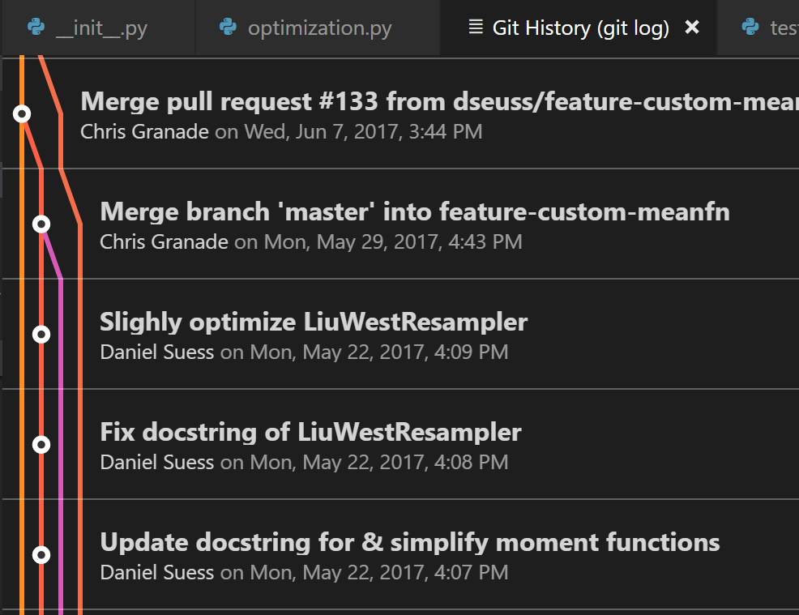
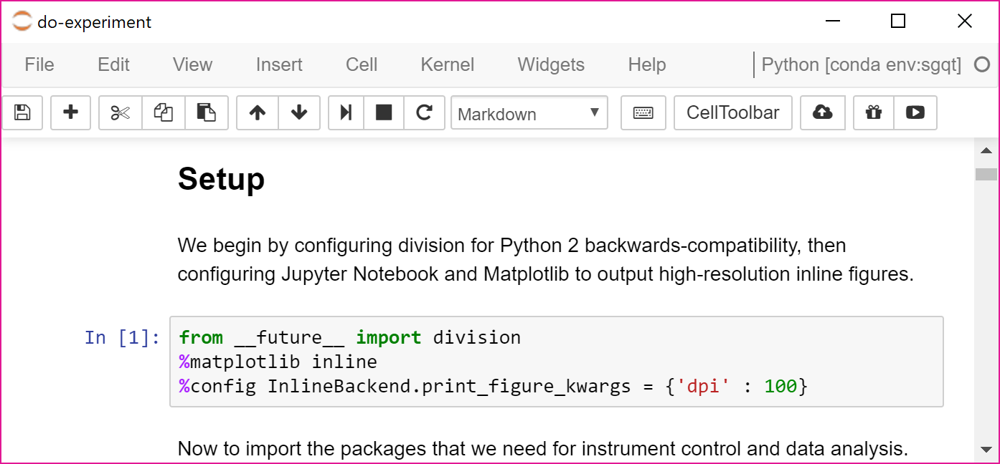
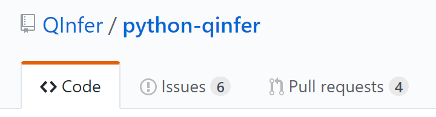

www.cgranade.com/research/talks/ibm/05-2017
Ferrie, Granade, Cory tfx
Granade et al. s87
Granade et al. b5x8
Stenberg et al. b59p, Robertson and Granade (in preparation)
Robertson and Granade (in preparation)
Granade, Ferrie, Cory zmz
Magesan, Gambetta, Emerson tfz
Wiebe et al. tf3
Wiebe et al. 7nx
Wiebe et al. tdk
Huszár and Houlsby s86; Granade et al. bhdw
review Granade et al. bhdw
theory Wiebe and Granade bk9d expr Paesani et al. b59r
theory Ferrie bchr expr Chapman et al. b59v
Granade et al. 1605.05039
Liu and West 8c2
Doucet et al. bmch
Ferrie and Granade tdj
Granade 10012/9217
figure: Ferrie tb4
Kimmel et al. 1608.00281, joint work w/ Kimmel and Wiebe
Svore et al. 1304.0741
Wiebe and Granade 1512.03145
Granade and Wiebe 1612.00762
background: neon by Orest Tataryn
background: photo by mattbuck , h/t Wiebe
{kind=link}
Isard and Blake cc76f6
Humanitarian QIP
Christopher E. Granade
Centre for Engineered Quantum Systems
$
\newcommand{\ee}{\mathrm{e}}
\newcommand{\ii}{\mathrm{i}}
\newcommand{\dd}{\mathrm{d}}
\newcommand{\id}{𝟙}
\newcommand{\TT}{\mathrm{T}}
\newcommand{\defeq}{\mathrel{:=}}
\newcommand{\Tr}{\operatorname{Tr}}
\newcommand{\Var}{\operatorname{Var}}
\newcommand{\Cov}{\operatorname{Cov}}
\newcommand{\rank}{\operatorname{rank}}
\newcommand{\expect}{\mathbb{E}}
\newcommand{\sket}[1]{|#1\rangle\negthinspace\rangle}
\newcommand{\sbraket}[1]{\langle\negthinspace\langle#1\rangle\negthinspace\rangle}
\newcommand{\Gini}{\operatorname{Ginibre}}
\newcommand{\supp}{\operatorname{supp}}
\newcommand{\ket}[1]{\left|#1\right\rangle}
\newcommand{\bra}[1]{\left\langle#1\right|}
\newcommand{\braket}[1]{\left\langle#1\right\rangle}
$
Building a quantum computer is hard.
So why do we do it?
- We're paid to?
- It's fun?
- Because it's (not) there?
All good answers, but not the whole story either.
proposal
Let's answer in the affirmative by building a quantum computer for humans.
Esp. important for publicly funded research.
Humanitarian:
adj; Relating to or characteristic of people who work to improve the lives and living conditions of other people.
— Merriam–Webster
What would a humanitarian paper look like?
- Accessible
- Practical
- Reproducible / Reusable: in public interest
- Honest (e.g.: not plagarized)
A paper isn't just a final output, though, but a process.
If we're building a quantum computer for humans, that process must also be in public interest.
- No harassment or hatred.
- Not just the part of the public already privileged.
This is difficult. What tools can help?
In this talk, I will summarize a range of technical and social tools for helping ensure that research helps people.
Disclaimers
- I'm going with what I know, hence focus on numerics/experiment vs pure theory.
- I'm also self-interested, so I'll highlight my own efforts.
- A lot of this represents research currently in development; it's not perfect.
- This talk is aspirational, not judgmental.
With that in mind, let's forge ahead and try to do the best science we can.
Technical Tools for Humanitarian QIP
Humanitarianism as Functional Requirements
We need technical tools which make it easier to:
- Collaborate without gatekeeping.
- Share and reuse experimental data, theoretical results, and numerical tools.
- Support and manage research resources.
Command Line
If it can be automated, it can be shared. Automation is a resource for collaboration and reproducibility.
Can easily communicate the same process by providing a few commands:
$ cd tex-example
$ pdflatex example.tex
$ bibtex example
$ pdflatex example.tex
$ pdflatex example.tex
Commmand line thus makes it easy to share research processes with collaborators, broad community.
Writing command-line interfaces easier than graphical tools; reduces barrier to tool creation.
$ cat hello.py # Displays contents of hello.py.
import click
@click.command()
@click.option('--loud', is_flag=True)
def main(loud):
print("HELLO WORLD!" if loud else "Hello.")
main()
$ python hello.py --loud
HELLO WORLD!
Git: Formal Support for Collaboration
Models collaboration on a project as a directed acyclic graph.

Git as Formalism
- Commits: Communication as unit of collaboration.
- Diff/Merge: Overwriting changes as intentional decision, not race condition.
- Branches: Independent or isolated work for later consolidation.
- Tags: Mark milestones (e.g.: arXiv posting, journal resubmission)
Formalism supports explicit decisions about how and what to share, making collaboration easier and more robust.
Git Annex and LFS:
(see Sarah's talk)
Python, Julia, R, …
- Open-source languages for scientific computation
- Interoperable w/ native code (C/C++, etc.)
- Robust toolchains for polyglot projects
contrast with
MATLAB, Mathematica, Igor, …
- Closed/expensive: discourages reuse.
- Monolithic development environments: difficult to integrate.
Jupyter: Literate Programming
Multi-lingual platform for mixing prose, equations, plots and code.
TODO: better screenshot
Jupyter as Community
Lots of additional tools for working with Jupyter:
- nbviewer: View notebooks online w/ no installation required.
- binder: Run Python notebooks w/o installaton.
- nbconvert: Format as TeX, PDF, web pages, blog posts, etc.
- Additional languages: F#, JavaScript, Scala, PARI/GP, MATLAB (yes, really)
Package Management
Makes it easier to:
- Distribute and reuse research outputs.
- Install/use third-party tools.
- Specify software environments for reproducible works.
System-Wide
# Ubuntu
$ sudo apt install texlive
# macOS / OS X
$ brew cask install mactex
# Windows
PS> choco install miktex
Language-Specific
# Python
$ pip install qinfer
# Julia
Julia> Pkg.add("PyCall")
# R
> install.packages("ggplot2")
# PowerShell
PS> Install-Module posh-git
Provides a valuable tool for specifying computing environments.
environment.yml
# Install:
# $ conda env create -f environment.yml
name: sgqt
channels:
- conda-forge
dependencies:
- python=3.6
- notebook
- qutip
- matplotlib
- pip:
- InstrumentKit
- qinfer
- PyDAQmx
Reproducible research means a lot of files to manage (source code,
TeX, package environments, READMEs).
Thus need tools to help manage sharing and redistributing.
PoShTeX: Managed Builds for Reproducibility
Uses PowerShell package management to support lightweight manifests for arXiv submission.
Export-ArXiv.ps1
Export-ArXivArchive @{
ProjectName = "sgqt_mixed";
TeXMain = "notes/sgqt_mixed.tex";
AdditionalFiles = @{
"notes/revquantum.sty" = "/";
"figures/*.pdf" = "figures/";
"README.md" = "anc/";
"src/*.yml" = "anc/";
"data/*.hdf5" = "anc/";
};
Notebooks = @(
"src/do-experiment.ipynb"
)
}
Produces ``sgqt_mixed.zip``, including supplemental material in a form suitable for uploading to arXiv.
Bayesian Inference: Objective Reasoning a/ Subjectivity
We are subjective agents. With enough caution (preregistration, bootstrapping, etc.), we can report objective results.
alternative
Use Bayes' rule to formally and objectively reason about our subjective beliefs.
$$ \Pr(\text{model} | \text{data}) = \frac{\Pr(\text{data} | \text{model})}{\Pr(\text{data})} \Pr(\text{model}) $$Practitioners with different priors $\Pr(\text{model})$ will disagree about the posterior $\Pr(\text{model} | \text{data})$, but will agree on the process.
- Isolates and documents points of disagreement, encouraging honest reporting of subjective bias.
- Reproducible research makes it easier to substitute different priors, repeat analysis.
Software Tools for Bayesian Inference
Example: QInfer is for People
Social Tools for Humanitarian QIP
Git Hosting: GitHub, BitBucket, GitLab, …
- Use of Git as a protocol reduces monopolization.
- Version control as social media: visibility for software outputs, research groups, institutions.
Example: Pull Requests
Formalises internal or unsolicited collaboration.
Esp. important for fighting bibliometrics, rewarding non-traditional research.
Transferrable Skills Development
Problematic / toxic environments exist, can be reinforced if students' skills are too specialized.
Thus, focusing on transferrable skills can reduce institutionalization of toxic environments.
examples
- Python vs MATLAB: Widely-adopted platform and reliance on general CS theory promotes skill development.
- Industry best-practices: version control, continuous integration.
Example: Functional Programming
Path to learn functional languages (e.g.: Haskell, F♯) from Python.
$ python
>>> from functools import partial, reduce
>>> from operator import mul
>>> product = partial(reduce, mul)
>>> product([1, 2, 3])
6
$ ghci # Haskell
Prelude> let product = foldl (*) 1
Prelude> product [1; 2; 3]
6
$ fsharpi # F♯
> let inline product xs = Seq.reduce (*) xs;;
> product [1; 2; 3];;
val it : int = 6
Example: Functional Programming (con'd)
Similar benefits for Julia and R.
$ julia
julia> partial(f, x) = ((xs...) -> f(x, xs...)
julia> product = partial(reduce, *)
julia> product([1, 2, 3])
6
$ R
> install.packages('functional')
> library(functional)
> product <- Curry(Reduce, `*`)
> product(list(1, 2, 3))
[1] 6
Example: Object-Oriented Programming
Can also learn other general concepts as transferrable skills.
$ python
>>> class Foo(object):
... def hello(self):
... print("Hello")
>>> foo = Foo()
>>> foo.hello()
Hello
$ csharp
csharp> class Foo {
> public void Hello() {System.Console.WriteLine("Hello");}
> }
csharp> var foo = new Foo()
csharp> foo.Hello()
Hello
Example: Object-Oriented Programming (con'd)
$ jshell
-> class Foo {
>> public void hello() {
>> System.out.println("Hello");
>> }
>> }
-> Foo foo = new Foo();
-> foo.hello();
Hello
Better Journals
Focus on bibliometrics and impact:
- Encourages hype, discourages incremental or practical results.
- Focus on "demonstrations" enables gatekeeping.
- Referee process discourages reusability and reproducibility.
- Hides institutional biases behind citation counts.
Journals that encourage reproducible results, downplay impact can be a valuable tool to encourage our humanitarian goals.
Open Refereeing?
Can we go further in deanonymizing referee process?
- Makes it more difficult for referees to harass or abuse ECRs.
- Also makes it harder for ECRs to challenge established groups.
Statistics and Site Surveys
In applying technical or social tools, need good feedback to ensure that they work as intended.
Cultural assessments
- Citation disparity Caplar et al. b8rn
- Pull request assessments Terrell et al. b8rp
Site surveys
- American Physical Society 2kB6Ev
- Institute of Physics j2b156
Need to incentivize studies which responsibly assess impact of tools and policies on discrimination and hatred.
Codes of Conduct
Important as discouragement against scientific misconduct.
Examples of misconduct
- Harassment, abuse, violence
- Plagarism, misrepresentation of authorship
- Discriminatory conduct in general
- Codes clarify community values, scientific integrity
- Formal warnings prevent escalation / institutionalization.
- Availability of severe penalties helps address endemic harassment.
- Matches industry best-practices.
Codes of conduct can come in a variety of forms:
- Contributor covenants
- Journal / professional society ethics
- Workplace conduct
- Conference / event conduct
e.g.: Contributor Convenant, Geek Feminism Code of Conduct, ACM Code of Ethics
TODO: conclude